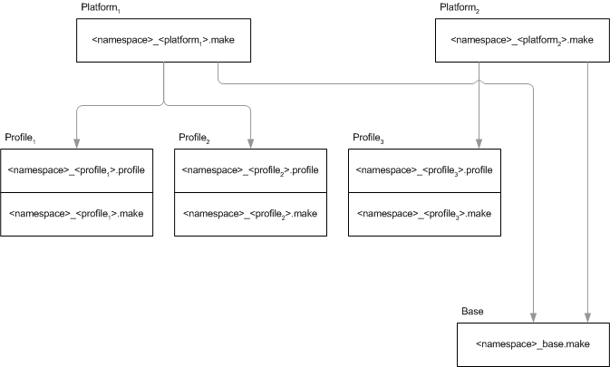

community.aegirproject.org
Setting up a Platform
What is a platform anyway?
Platforms are a type of node in Aegir and often the source of confusion for new users. This is because the term or concept isn't really used explicitly outside of Aegir - Aegir is a system that suddenly makes Platforms 'make sense' to have.
The simplest definition of a Platform is a copy of Drupal core. That's really it. When you download a copy of Drupal from drupal.org, the result is what Aegir thinks of as a 'Platform'. No sites exist on it yet.
Before you can create a site using Aegir, you must first define the Platform. This tells Aegir where to store the site directory, settings.php etc on the system.
In short: first you create a Platform, and a site 'lives' on that platform, in exactly this fashion:
- drupal-6.19 (Platform)
- /sites/yoursite.com/settings.php (site)
This abstraction is somewhat unique to Aegir in that it opens up a world of new opportunities for you. By managing Platforms or copies of Drupal core, and understanding what sites are on what copy of core, Aegir is capable of moving sites between platforms (which is effectively upgrading a site) - read more about this in Migrating/upgrading and renaming sites.
What else could be considered a platform?
Anything that is more or less a copy of Drupal core is something Aegir considers a 'platform'. This thus includes any Drupal distribution, such as OpenAtrium, Pressflow, Acquia Drupal, OpenPublish, ManagingNews, and so on.
The key difference between such distributions and a standard 'vanilla' copy of Drupal core is that these distributions tend to have * a custom install profile in the /profiles/ directory * a set of contrib or custom developed modules, libraries or themes shipped with the core or profile
If you build a copy of Drupal core and place your custom install profile in /profiles, this could be considered a Platform.
If you place your custom install profile in an existing Platform and re-Verify the Platform, that profile will now be recognised as an option when creating a site on that Platform.
Various 'versions' of Drupal, such as Drupal 5.x, Drupal 6.x or Drupal 7.x, are all considered separate Platforms in Aegir.
Drupal 4.x is not supported in Aegir.
Is this paradigm clear? 'Sites' are managed inside 'Platforms'. 'Platforms' are managed inside 'Servers'. 'Servers' are managed by Aegir. In this sense, Aegir manages all the rest too.
Getting a Platform onto your server
A number of techniques exist to put a platform on a server.
Drush
For a standard Drupal platform, the easiest is to simply use drush:
php /var/aegir/drush/drush.php dl drupal-6.19Wget
You can simply use the 'wget' command, for example:
wget http://launchpad.net/prosepoint/trunk/0.23/+download/prosepoint-0.23.tar... -zxvf prosepoint-0.23.tar.gzVersion control
You could use CVS, eg:
export CVSROOT=:pserver:anonymous:anonymous@cvs.drupal.org:/cvs/drupal
cvs login
cvs co -d aegir/drupal-6.15 -r DRUPAL-6-19 drupal Manually
You could download it on your PC and scp or FTP the files up onto your server.
Drush Make
Drush Make comes installed on your Aegir system by default. You can use Drush Make to 'build' a platform, which does the job of fetching core and any other contributed or custom packages that you specify in a makefile.
You can even specify the URL or path to a makefile in the form you are given when adding a Platform node in the Aegir frontend, and Aegir will execute the Drush Make command in the backend and build it for you!
Explaining how to use Drush Make is outside the scope of this document. Consult the README.txt of Drush Make to learn the makefile syntax, or use a ready-made makefile available from the web. Some distributions such as OpenAtrium provide an example makefile for you to build the distribution with.
Platforms and remote web servers
Aegir has a 'spoke' model when it comes to remote servers, whereby the 'master' Aegir server keeps a copy of all platforms and sites and syncs changes outbound to remote servers that are running those platforms or sites, on tasks such as Verify etc.
Because of this, all platform names and paths must be unique, even across remote servers. This means you cannot have 'Drupal 7.0' in /var/aegir/platforms/drupal-7.0 on both Server A and Server B, because it can only exist once in that location on the master Aegir server. Platforms can't share the same name 'Drupal 7.0' because Aegir uses the platform name to define a 'context' by which it can refer to that server, and there can be no conflicts.
The exception to the unique path rule is when using web clustering (a collection of web servers running a platform), but even then, the platform is attached to the 'cluster' server and so is still 'unique' in this sense, in that that path cannot be reused for another platform running on another server somewhere else.
So when adding platforms to your filesystem and to Aegir, make sure that the platform is unique in name and path, so that other servers cannot try and use this reserved name/path for other platforms.
More on the platform name space
Migrating a site to a remote server illustrates this name space issue further: as an example; given that an Aegir hostmaster has two directories representing two platforms (and remembering that aegir does not migrate platforms, only sites):
/var/aegir/platforms/plat-local
/var/aegir/platforms/plat-remote
and the remote server also has:
/var/aegir/platforms/plat-remote
then having aegir hostmaster migrate a site from platform plat-local to plat-remote will result in the site files being:
1. moved from .../plat-local to hostmaster's local .../plat-remote and
2. rsync'd to .../plat-remote on the remote server.
It is important to understand this if you are importing a working Drupal site into Aegir's control and Aegir hostmaster is on a different server from the working Drupal site.
Do I have to have multiple platforms on my Aegir?
No, you can simply have one platform or copy of Drupal core and provision all your sites to sit on the one platform. However, eventually you will want to upgrade your sites to a new copy of Drupal core, and rather than replace your core files in-place, it's recommended to build a new Platform with the newer copy of core, and use the Migrate task to move your sites (upgrade) onto the new code.
Adding the Platform node
Now that you've got your Platform on your server, or you know where and how you're going to do it (say, with Drush Make), it's time to tell Aegir about your new Platform.
To do so, add a new node of type 'Platform' in your Aegir frontend. Typically this is most easily done by visiting Create Content > Platform in the Admin Menu.
The Platform node form has several fields required for giving Aegir information about your platform. These are:
- Name (a descriptive name for your platform. You very likely want this to be something like "Drupal 6.19".)
- Publish Path (the path on the filesystem where the platform is, or will be when Drush Make builds it. This must be the absolute path, for instance '/var/aegir/drupal-6.19')
- Makefile (the path on the filesystem to a makefile that will be used to create the platform.)
Once you have completed entering this information, you can click the Save button. A 'Verify' task will be spawned and added to the Task queue (visible in the right sidebar). The backend will then parse this new platform and build up a registry of information about it, such as what version of Drupal it is, as well as what versions of install profiles, modules and themes are present on that platform.
Certain system configurations, such as Apache configurations similar to the .htaccess file that comes with Drupal, will be written to the filesystem, permissions checked and adjusted where necessary, and services restarted.
Now that you have a platform or codebase that Aegir is aware of, you can now proceed to install or import sites onto that platform!
- Login or register to post comments
- Print entire section
- Talk
Verifying servers, platforms and sites
One of the common tasks available to all three of the major entities in Aegir (Servers, Platforms and Sites) is the Verify task.
You can think of the Verify task as a sort of routine 'sanity check' of that specific entity, with a sort of checklist of expected behaviour with which it runs through to confirm that the entity is operating as normal.
The Verify task also can be used to regularly 'sync' your platform or site with the Aegir package registry, to keep it up to date on whether any modules have changed (been removed or enabled/disabled). This will aid running Migration and Clone tasks, since Aegir needs to have a precise knowledge of what modules, themes or profiles are on the system before it can accurately judge whether an upgrade is possible.
It is recommended to run the Verify task on your entities routinely to keep them in sync with the Aegir database, and to run a Verify of your site, current platform and target platform prior to attempting a Migration or Clone task.
What happens in a Verify task?
Servers
- When you add a new server node in the Aegir frontend, a Verify task is spawned for the first time.
- the configuration directories are created if they don't exist and set to the correct permissions, or set to the correct permissions if they already existed but were incorrectly set
- if the server is the master server, some additional configuration and backup directories are created
- generates or updates a Drush alias file for the server.
- some configuration directories are synced from the master server to remote servers
- Checks that new databases and database users can be created
- Checks that the HTTP web server can be restarted
Platforms
- When you add a new platform node in the Aegir frontend, a Verify task is spawned for the first time.
- If the platform directory didn't exist on the file system and a Drush makefile was provided, Drush Make will be called to build the platform in that location
- If the platform directory didn't exist and no Drush makefile was provided, the task will fail with the error 'Does not contain a valid Drupal installation'.
- Checks that the permissions are correct, at least of the 'sites' folder of the platform directory (so we can create new sites here)
- Searches for existing sites on the platform that are not yet in the system. These sites will be 'imported' into Aegir.
- Scans the platform and builds or updates the package registry in the Aegir database.
- Generates or updates a Drush alias for the platform, and a drushrc.php file in the platform's directory root.
- Reads in the platform's .htaccess file into a platform-wide web server vhost configuration file.
- Restart the web server
Sites
- When you add a new site in the Aegir system, an Install task is spawned, This is contrasted with the above entities which spawn only Verify tasks initially.
- Scans the site and builds or updates the package registry in the Aegir database.
- Creates important directories in the site folder, such as 'files'. Sets or corrects the appropriate permissions
- Manages/updates any site aliases (symlinks, redirects etc)
- Re-generates the settings.php
- Re-generates the site's web server vhost configuration file
- Re-generates the site's drushrc.php and a Drush alias
- Clears caches.
You can run or re-run the Verify task at any time on a server, platform or site, and it is encouraged to do so.
Certain tasks, such as 'deploy' when a site is being imported, automatically imply a verify of the site.
Each Verify task, like all tasks generated by Aegir, emit a 'task log' available for review after the task has completed (or failed).
If a Verify task fails, and the task log does not provide enough information to help you resolve the problem, trying running drush @example.org provision-verify --debug from the command line to find out what caused the problem. Remember to replace 'example.org' with the URL of the site you are trying to verify.
Locking and Deleting platforms
Platforms, like sites, have tasks that can be performed against them, however these tasks are smaller in number and generally more simple.
Some tasks that are available to platforms out of the box are Lock/Unlock and Delete.
Lock
The lock task is simply a conceptual protection placed over a platform so that new sites can't be installed on that platform.
It doesn't actually modify anything on the filesystem or on the platform itself, but merely changes the status of the platform in the Aegir database. Once a platform is considered 'locked', it no longer appears in the New Site form when adding a new site.
You might choose to Lock a platform if there is something wrong with that platform and you want to prevent new sites from being added to it by one of your clients or users, or you want to 'hide' the platform for some other reason (perhaps awaiting a release date before allowing new sites).
Unlock
To unlock a platform that has been locked, simply click the Unlock button and the status of the platform will be switched back to an Enabled state.
Delete
The Delete task is similar to that of sites. The delete button allows you to completely remove a platform from your filesystem irreversibly.
This can be handy if you engage in a build management methodology that involves making regular new platforms to upgrade your site to. It is easy to amass large numbers of platforms on the filesystem, so the Delete task was born to deal with that problem.
A platform can only be deleted if there are no sites currently provisioned on it. The task will fail before deleting anything if it detects that there are sites in the 'sites' directory of that platform.
You must migrate these sites off to a valid new platform before you can delete such a platform.
Unlike site deletions, there is no backup made of a platform (because it's not bootstrappable by Drush), so be careful with this task: there is no going back!
It is recommended to make regular filesystem backups outside of Aegir altogether, and to use the Lock task to temporarily 'disable' a platform from use if you are unsure whether you want to delete it, but don't want it shown on the Aegir frontend.
Manually deleting a platform
Similarily to deleting sites, sometimes something goes wrong during a Delete task and the platform doesn't get completely removed. Often this is caused by permissions problems on the platform (i.e something owned by a different user that the aegir user can't remove).
The Delete task sometimes cannot be re-run in this situation. In which case,:
- Manually remove the platform files on the server if they exist (i.e /var/aegir/drupal-6.19)
- Remove the Drush alias for this platform if it is still present (in /var/aegir/.drush/)
- Remove the platform configuration file from /var/aegir/config/server_master/apache/platform.d (and the same for the other server_ directory if the platform was hosted on a remote webserver)
- Go to e.g. /node/123456/delete in your browser on the Aegir frontend and delete the node. This will remove the platform node and all associated task nodes from the system, as well as remove the entry from the hosting_platform and hosting_context table in the database.
Using drush_make to optimize workflow
Introduction
Once you understand why Aegir is a great tool for developing and managing Drupal web sites you inevitably start looking for ways to optimize workflow. mig5's article on Drupal deployments and workflows provides great insight on managing platforms, profiles and sites using Aegir, version control and the drush_make project.
The challenge of managing platforms and profiles
Whether you are using Drupal to develop bespoke web sites or vertical web applications with hundreds of instances (sites), it is not uncommon to be managing a mix of platforms and profiles. These comprise community-contributed projects that, in many cases, are frequently updated. To protect the integrity of their platforms developers like to explicitly control which version of which project they use and when. It can be time consuming to keep everything up to date. Many contributed projects are available in versions compatible with multiple Drupal versions so this mix of platforms and profiles can be complex.
Using drush_make to manage common and disparate code bases
One of the really powerful features of drush_make is that it can operate recursively. You invoke the drush make command on a local make file but if drush_make fetches a profile or project that includes another make file then this is parsed and additional packages are fetched.
A typical way that developers leverage this feature is when they want to have some projects available to the entire platform and some that are specific to one or more custom profiles that are part of the platform. They achieve this by including a different make file with each profile repository.
Using make files with profiles works well when you want to manage distinct code bases that are specific to a site running under that profile. Only sites using profile 'foo' can see modules, themes or libraries located in subdirectories of the foo profile's directory. However, using the includes option you can also reference a make file directly using a local path or a URL. The advantage of this is that you can maintain a make file that references the projects you use on every profile on every platform (e.g. views, cck, path etc.).
This is illustrated schematically below:

Example make files
Here are some example make files that illustrate the concepts described above:
<namespace>_<platform1>.make
core = 6.x
api = 2
; drupal core
projects[drupal][version] = 6.20
; platform projects
projects[webform][vesion] = 3.2
projects[workflow][version] = 1.4
projects[job_scheduler][version] = 1.0-beta3
projects[feeds][version] = 1.0-beta10
; platform theme
projects[acme_theme][type] = "theme"
projects[acme_theme][download][type] = "git"
projects[acme_theme][download][url] = "git@git.example.com:drupal/themes/acme_theme.git"
projects[acme_theme][download][branch] = "master"
; profile 1
projects[acme_profile1][type] = "profile"
projects[acme_profile1][download][type] = "git"
projects[acme_profile1][download][url] = "git@git.example.com:drupal/profiles/acme_profile1.git"
projects[acme_profile1][download][branch] = "master"
; profile 2
projects[acme_profile2][type] = "profile"
projects[acme_profile2][download][type] = "git"
projects[acme_profile2][download][url] = "git@git.example.com:drupal/profiles/acme_profile2.git"
projects[acme_profile2][download][branch] = "master"
; base make file
includes[acme_base] = "http://example.com/acme_base.make"
; patches
projects[superfish][patch][] = "http://example.com/superfish-add-acme-style.patch"<namespace>_<profile1>.make
core = 6.x
api = 2
; ecommerce
projects[ubercart][version] = 2.4<namespace>_<profile2>.make
core = 6.x
api = 2
projects[openlayers][version] = 2.x-dev
projects[ldap_integration][version] = 1.0-beta2<namespace>_base.make
core = 6.x
api = 2
; utilities
projects[ctools][version] = 1.8
projects[jquery_ui][version] = 1.4
projects[jquery_update][version] = 2.x-dev
projects[modalframe][version] = 1.7
projects[advanced_help][version] = 1.2
projects[transliteration][version] = 3.0
projects[token][version] = 1.15
; content management
projects[imageapi][version] = 1.9
projects[imagecache][version] = 2.x-dev
projects[cck][version] = 2.9
projects[filefield][version] = 3.9
projects[imagefield][version] = 3.9
projects[diff][version] = 2.1
projects[date][version] = 2.7
projects[calendar][version] = 2.4
projects[views][version] = 3.x-dev
projects[views_slideshow][version] = 2.3
projects[content_profile][version] = 1.0
projects[og][version] = 2.1
projects[node_clone][version] = 1.2
projects[node_export][version] = 2.21
projects[node_import][version] = 1.x-dev
projects[nodequeue][version] = 2.9
projects[noderelationships][version] = 1.6
projects[reverse_node_reference][version] = 1.0
projects[nodereference_views][version] = 1.3
projects[page_title][version] = 2.3
projects[pathauto][version] = 1.5
projects[realname][version] = 1.3
; ui
projects[wysiwyg][version] = 2.2
projects[imce][version] = 2.1
projects[imce_wysiwyg][version] = 1.1
; site administration
projects[admin_menu][version] = 1.6
projects[devel][version] = 1.x-dev
projects[devel_themer][version] = 1.x-dev
projects[globalredirect][version] = 1.x-dev
projects[google_analytics][version] = 2.3
projects[xmlsitemap][version] = 2.0-beta1
; site building
projects[rules][version] = 1.4
projects[features][version] = 1.0
projects[context][version] = 3.0
projects[strongarm][version] = 2.0
projects[purl][version] = 1.0-beta13
projects[spaces][version] = 3.0
; site theming
projects[skinr][version] = 1.6
projects[superfish][version] = 1.6
projects[adaptivetheme][version] = 3.0-rc2
; libraries
; CKEditor
libraries[ckeditor][download][type] = "get"
libraries[ckeditor][download][url] = "http://download.cksource.com/CKEditor/CKEditor/CKEditor%203.4/ckeditor_3.4.tar.gz"
libraries[ckeditor][directory_name] = "ckeditor"
libraries[ckeditor][destination] = "libraries"
; jquery ui library
libraries[jquery_ui][download][type] = "get"
libraries[jquery_ui][destination] = "modules/jquery_ui"
libraries[jquery_ui][download][url] = "http://jquery-ui.googlecode.com/files/jquery-ui-1.7.3.zip"
libraries[jquery_ui][directory_name] = "jquery.ui"{kind=link}
#1
I don't understand how, using drush under aegir, I can download a profile from drupal.org, or what the makefile looks like to do that. When I direct Aegir to a profile makefile to make a new drupal, and in profiles/cforge it puts a whole new drupal with the cforge profile in profiles/cforge/profiles/cforge When I try to download my cforge profile as if it were a module I get
$ drush @test.communityforge.net dl cforge>Source directory /tmp/drush_tmp_1368637808/cforge is not readable or does not exist. [error]
>Project cforge (7.x-1.0-rc4) could not be downloaded to /var/aegir/platforms/test/sites/all/modules/cforge.
#2
Koumbit's kplatforms is a repository of makefiles that we use to maintain our production platforms. It's neither 'official', nor an exhaustive list of distributions. But it can serve as an reference for how one can build fairly re-usable makefiles.
@matslats I think the problem you're having is due to your inclusion of a Drupal core project in cforge.make. An install profile's makefile should generally only include its dependencies (modules, themes & libraries), so that it can in turn be recursively built when the profile is added to a "stub" makefile.
#3
Thanks I think I haven't grasped the concept of a stub makefile yet. I'll experiment some more.